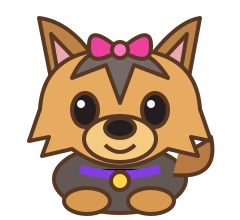

Your little woodland friend!

You helped Molly with all seven care activities!
On Android, open in Chrome and choose Install app or Add to Home screen in the menu. On iPhone, open in Safari, tap Share and Add to Home Screen.